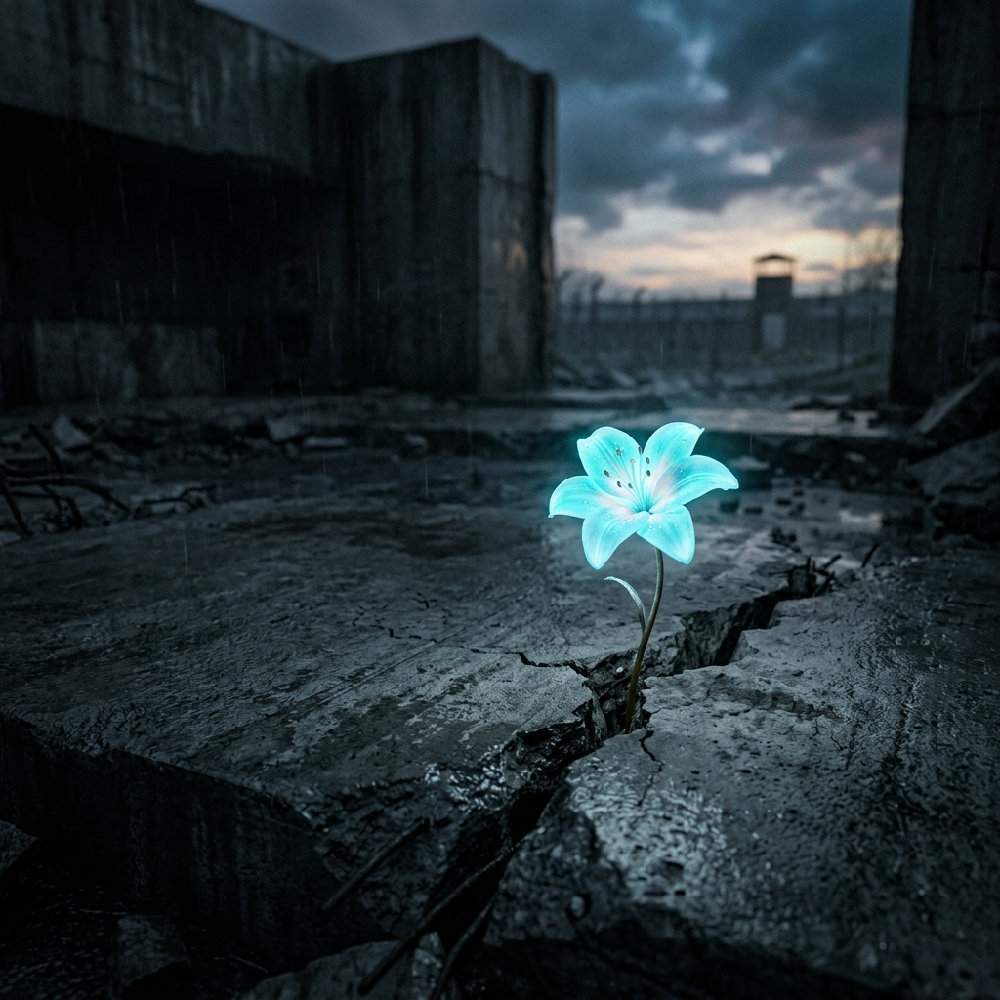

Sloboda je riječ oko koje se vode najžešći sporovi u modernom svijetu. George Weigel prikazuje njezinu filozofsku povijest, a Viktor Frankl je testira u logorima smrti. Zajedno dokazuju da je smisao — a ne udobnost — ono što nas čini ljudima.
Tekst 1 — George Weigel
Isaiah Berlin: Pozitivna i negativna sloboda
Prije nego što zaroni u duboku povijest Zapada, Weigel se bavi modernim okvirom koji je postavio filozof Isaiah Berlin tijekom Hladnog rata. Berlin je naše razumijevanje slobode podijelio u dva tabora:
Pozitivna sloboda ("Sloboda za")
Često povezana sa socijalističkim ili utopijskim modelima. Nastoji iskoristiti državnu moć kako bi ljude oslobodila za "navodno veće dobro" ili povijesni cilj — bez obzira na njihovu volju. Weigel napominje da to neizbježno vodi prisili i totalitarizmu.
Negativna sloboda ("Sloboda od")
Klasični liberalni model. Definira slobodu jednostavno kao neometanje. Slobodni ste dok god vas država ili drugi ostavljaju na miru da činite što želite, pod uvjetom da ne štetite drugima.
Zamka materijalističkog shvaćanja volje
Iako je negativna sloboda mnogo sigurnija od prisila pozitivne slobode, Weigel tvrdi da oba modela na kraju zakazuju. Zašto? Zato što ljudsku osobu svode na puku materijalnu volju. Nijedan ne pita čemu bi volja trebala težiti ili što ljudska narav zapravo zahtijeva. Da bismo razumjeli gdje smo izgubili svrhu slobode, Weigel kaže da se moramo vratiti 700 godina u prošlost.
Priča o dva monaha: Bitka za slobodu
Weigel prati ovaj gubitak dubine do sukoba koji je započeo u 13. stoljeću i još uvijek definira naš politički svijet. Dva srednjovjekovna monaha. Dvije radikalno različite ideje o tome čemu sloboda služi.
| Sv. Toma Akvinski (13. st.) | William od Ockhama (14. st.) | |
|---|---|---|
| Srž ideje | Sloboda za izvrsnost — mudar izbor prema ljudskom procvatu | Sloboda indiferencije — volja kao suverena, odvojena od prirode ili istine |
| Pogled na zakon | Vanjska pomoć koja nam pomaže ostvariti dobra kojima već težimo | Prisilno vanjsko nametanje — Božja volja ili volja države koja prisiljava na poslušnost |
| Rezultat | Vrlina, uređena sloboda, ljudska izvrsnost | Radikalna autonomija, moralni relativizam, 'volja za moć' |
| Moderni nasljednik | 'Uređena sloboda' — slobodno i kreposno društvo | Nihilizam; jastvo kao samostvarajuće; moć kao jedini odnos među ljudima |
- ›Akvinski: Ovladavanje slobodom slično je učenju sviranja instrumenta. Prvo morate proći kroz disciplinu i vježbu prije nego što možete stvarati glazbu. Ne počinjete tako što svirate bilo što.
- ›Ockhamova eksplozija: Weigel naziva nominalizam 'prvom atomskom eksplozijom modernog doba'. On je prekinuo vezu između slobode i ljudske prirode — ostavljajući čistu volju bez ičega čemu bi težila.
- ›Moderni rezultat: Društvo koje može reći samo 'ne smiješ nametati svoje vrijednosti' nema više jezika kojim bi objasnilo zašto je sloboda vrijedna umiranja — ili zašto se neke stvari jednostavno ne bi trebale raditi.
"Tiranija buja u svijetu u kojem sredstva uvijek nadvladaju ciljeve. Sloboda indiferencije ne može održati uistinu slobodno društvo."
— George Weigel
Upozorenje biotehnologije
Weigel ukazuje na Huxleyjev Vrli novi svijet: društvo opsjednuto uklanjanjem svake patnje uklanja uvjete za ljubav, hrabrost i smisao. 'Voljni čovjek' — Homo voluntatis — ne može objasniti zašto se neke stvari koje se mogu učiniti ne bi trebale učiniti.

Volja za smislom: Sloboda u lice patnji.
Tekst 2 — Viktor Frankl
Čovjekova potraga za smislom
Godine 1946., Viktor Frankl — bečki psihijatar koji je preživio Auschwitz i Dachau — objavio je svoja sjećanja. Ne radi se o velikim strahotama. Radi se o običnim svakodnevnim mukama — i onome što je opazio o ljudskom umu pod totalnim uništenjem.
⚡ Kapoi i nepoznate žrtve
U logorima su se pojavile dvije vrste zatvorenika. Kapoi — zatvorenici kojima su dane privilegije u zamjenu za nadzor drugih zatvorenika — najbolje su prolazili materijalno. Nikada nisu bili gladni. Neki su bili okrutniji od samih SS stražara. Birali su preživljavanje umjesto solidarnosti.
Zatim su postojale obične nepoznate žrtve — bez čina, bez privilegija, jedva imajući hranu. Ipak, Frankl je gledao neke od njih kako hodaju kroz barake dijeleći posljednje komadiće kruha i tješeći umiruće.
Njegov zaključak: "Čovjeku se može oduzeti sve osim jedne stvari — posljednje od ljudskih sloboda: da izabere svoj stav u bilo kojim zadanim okolnostima."
Tri faze
- ›Prijem (Šok): 'Zabluda o pomilovanju' — nada da stvari neće biti tako loše kao što se strahuje. Brzo zamijenjena crnim humorom i hladnom znatiželjom kao psihološkim štitovima.
- ›Ukorijenjenost (Apatija): Osjećaji tupe. Smrti i batinanja prestaju se registrirati. Zatvorenik se vraća na primitivni nagon — hrana, toplina, preživljavanje.
- ›Oslobođenje (Depersonalizacija): Puštanje na slobodu djeluje nestvarno. Zatvorenik mora polako ponovno naučiti radost u svijetu koji možda više ne sadrži ljude o kojima je razmišljao kako bi se održao.
Izvori smisla
Postignuće
Stvaranje nečeg vrijednog — djelo, dovršen zadatak. Osjećaj doprinosa nečemu što ne bi postojalo bez vas.
Ljubav
Razmišljanje o voljenoj osobi. U dubinama očaja, Frankl je doživljavao blaženstvo držeći sliku svoje žene u mislima.
Patnja
Kako čovjek 'uzima svoj križ'. Ako život ima smisao, onda ga mora imati i patnja — a podnošenje patnje s dostojanstvom samo po sebi je oblik doprinosa.
"Onaj tko ima 'zašto' zbog kojeg živi, može podnijeti gotovo svako 'kako'."
— Friedrich Nietzsche, citira Frankl
Franklov obrat
Prestanite pitati što očekujete od života. Pitajte što život očekuje od vas. Svaka osoba, u svakoj situaciji, ima jedinstven odgovor — koji se može izraziti samo kroz djelovanje i ponašanje, ne riječima.